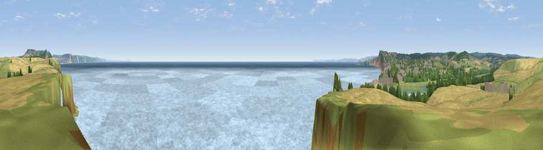

Viewpoint near Budleigh Salterton
#9128 in England · top 16% of its area beats it · near Budleigh SaltertonWhere it is
The exact computed spot (SY 08175 82275). Click the marker for map links.
The view, rendered

A 360° render of this exact spot computed from the terrain model, tree cover and land cover — summer colours, afternoon light, calibrated against photographs of famous viewpoints. Real trees, hedges and buildings will differ in detail.
The panorama
Grey silhouette: terrain skyline in each direction (720 bearings, Earth curvature and refraction included). Dashed green: skyline with trees (+15 m) and buildings (+8 m) as obstacles. Blue strip: how far the ground is visible on each bearing.
Where the view opens
Wedge length = distance to the farthest visible ground on that bearing (vegetation-aware). Rings at 10, 25 and 50 km.
What fills the view
74% water · 13% grassland · 10% cropland · 3% woodland ·
Angular shares of the visible panorama (visual magnitude), not map area. Landscape diversity 0.39 (0–1 Shannon).
Key numbers
More beautiful places nearby
The staircase of upgrades: each row has a higher view potential than everything closer. Driving times are estimates from straight-line distance, calibrated against real road routing — check an actual route before setting out.
| Place | Direction | Drive | Score |
|---|---|---|---|
| Viewpoint near Otterton | NNE · 1 km | ~4 min | 71.3 |
| Viewpoint near Knowle | WSW · 4 km | ~9 min | 81.9 |
| High Peak | NNE · 4 km | ~10 min | 85.3 |
| Golden Cap | ENE · 34 km | ~52 min | 88.7 |
| The Knoll | E · 46 km | ~66 min | 91.0 |
50.63291, -3.29974 · source: screening · position refined by local search. Computed location — check access rights before visiting.